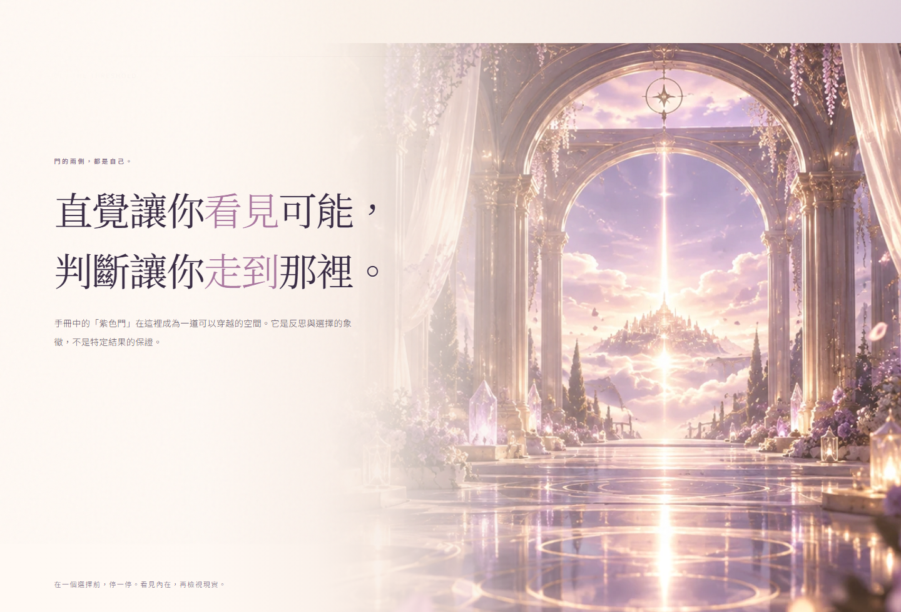
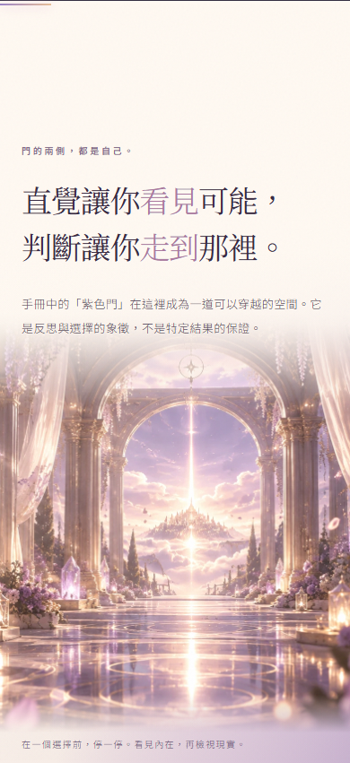
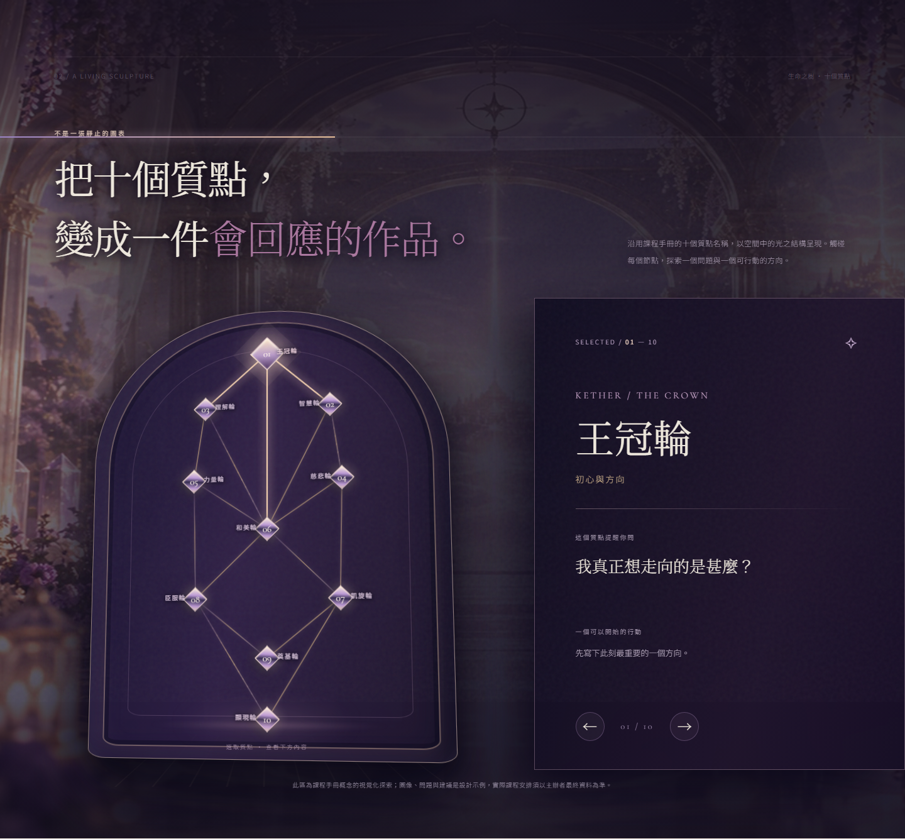
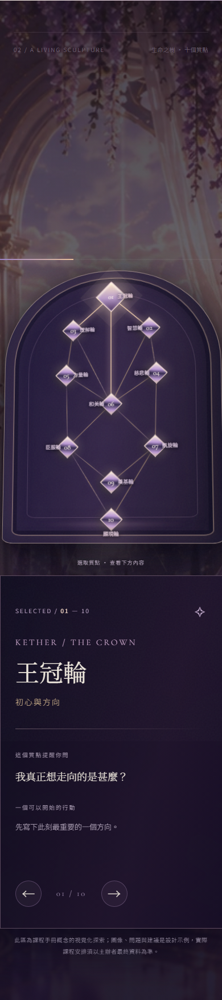
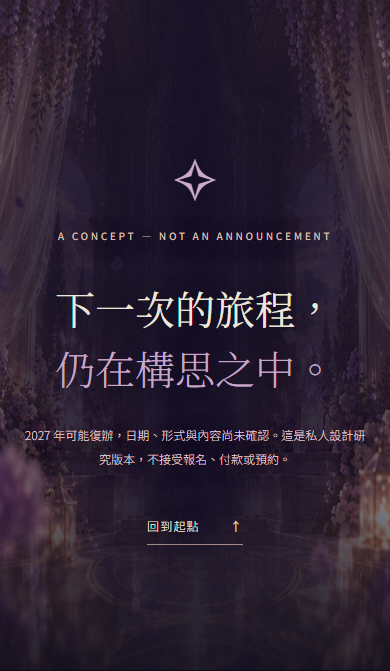

01 · Threshold — 寬門廊、前後景融入頁面


02 · Tree — 原圖建築托住真互動質點
原圖假質點已從背景移走，仍然由網站 JS 生成十個可按嘅質點。唔會出現雙層假節點。


03 · Closing — 改為有空間深度嘅結尾


呢度全部係由真 Chrome Headless 網頁截取，唔係重新生嘅 mockup。原圖只作有景深嘅背景素材；網頁文字、十個生命之樹質點、三軸互動與 Winnie 真相繼續保持原生可操作。
直接進入可操作 R5 Page

原圖假質點已從背景移走，仍然由網站 JS 生成十個可按嘅質點。唔會出現雙層假節點。


